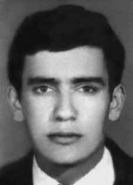

Lucio
Petit
da Silva
CIRCUNSTÂNCIAS DA MORTE
São diversas as informações sobre as circunstâncias de seu desaparecimento. Conforme consta no “Relatório Arroyo” foi visto pela última vez com Antônio de Pádua Costa e Antônio Alfaiate, em 14/1/1974, após confronto com os militares. Mas, segundo depoimento prestado em 2001 ao Ministério Público Federal, por Margarida Ferreira Félix, em 21/4/1974 os últimos guerrilheiros sobreviventes foram presos, na casa de Manezinho das Duas, e que estes embarcaram vivos em helicóptero do Exército. Eram eles: Beto (Lúcio Petit da Silva), Antônio (Antônio Ferreira Pinto) e Valdir (Uirassu de Assis Batista). Em depoimento ao MPF em 6/7/2001, Antônio Félix da Silva também confirma esta versão. Ele afirmou que […] foi obrigado a servir de guia para os militares na região de Água Boa, Caçador e Borracheiro,[…]; que os militares pousaram em uma clareira perto de sua casa e foram a pé até a casa de Manezinho das Duas e se esconderam em um bananal próximo da casa; que no dia seguinte, pela manhã, o declarante foi até a casa do Manezinho das Duas, conforme determinação dos militares; que lá chegando, por volta das 7 horas da manhã, do dia 21.04.1974, o declarante viu Antônio, Valdir e Beto sentados em um banco na sala da casa, com os pulsos amarrados para trás com uma corda fina, parecendo ser de nylon; que o declarante viu um militar se comunicando pelo rádio; que, por volta das 9 horas da manhã, chegou o helicóptero que levou os militares e os três prisioneiros; que o declarante apenas percebeu que Valdir estava ferido, parecendo ser um lenço na batata de sua perna, que atingia metade da mesma, tendo dificuldade para andar até o helicóptero De acordo com o relato do jornalista Leonencio Nossa, no livro “Mata! O Major Curió e as Guerrilhas do Araguaia”, baseado em depoimentos de Sebastião Rodrigues de Moura, o major Curió, Os guerrilheiros foram transportados de helicóptero para a Bacaba. Foram vistos no desembarque por Adalgisa e duas filhas – mulheres de agricultores eram levadas para as bases, onde cozinhavam e faziam serviços de limpeza sem remuneração. Muitas vezes eram violentadas por soldados. Adalgisa lembra que Valdir [Uirassu de Assis Batista] assobiava, cantava e pulava – estava com as pernas tombadas pelas feridas da leishmaniose. […] Alfaiate e Valdir foram mortos uma semana depois na Clareira do Cabo Rosa. Beto [Lucio Petit da Silva] ficou mais tempo vivo. Foi interrogado pelo general Bandeira, conta Curió. Em contraposição aos depoimentos, o “Relatório do Ministério da Marinha”, de 1993, confirma a morte de Lúcio Petit em março de 1974. iv Já o Relatório do CIE, do Ministério do Exército determina como data de morte o dia 28/4/1974, sete dias depois da data de prisão referida pelos moradores da região. v Ainda segundo dados do “Arquivo Curió”, disponíveis no livro “Documentos do SNI: Os mortos e Desaparecidos na Guerrilha do Araguaia”, Lúcio foi preso e executado em 2/5/1974. Uma versão completamente diferente está presente no processo da Comissão Especial sobre Mortos e Desaparecidos. Na sua certidão de óbito consta como data de morte o dia 29/11/1973, mesma data que aparece no relatório do Ministério do Exército, entregue ao ministro da Justiça Maurício Correa em 1993.
There is diverse information about the circumstances of his disappearance. As stated in the “Arroyo Report”, he was last seen with Antônio de Pádua Costa and Antônio Alfaiate, on 1/14/1974, after a confrontation with the military. But, according to a statement given in 2001 to the Federal Public Ministry, by Margarida Ferreira Félix, on 4/21/1974 the last surviving guerrillas were arrested, in the house of Manezinho das Duas, and they boarded the Army helicopter alive. They were: Beto (Lúcio Petit da Silva), Antônio (Antônio Ferreira Pinto) and Valdir (Uirassu de Assis Batista). In a statement to the MPF on 7/6/2001, Antônio Félix da Silva also confirms this version. He stated that […] he was forced to serve as a guide for the military in the region of Água Boa, Caçador and Borracheiro,[…]; that the soldiers landed in a clearing near his house and went on foot to Manezinho das Duas's house and hid in a banana grove close to the house; that the following day, in the morning, the declarant went to Manezinho das Duas's house, as determined by the military; that arriving there, around 7 am, on 04/21/1974, the declarant saw Antônio, Valdir and Beto sitting on a bench in the living room of the house, with their wrists tied behind them with a thin rope, appearing to be made of nylon; that the declarant saw a soldier communicating on the radio; that, at around 9 am, the helicopter arrived and took the soldiers and the three prisoners; that the declarant only noticed that Valdir was injured, appearing to be a scarf on his leg, which reached half of it, having difficulty walking to the helicopter According to the report by journalist Leonencio Nossa, in the book “Mata! O Major Curió e as Guerrilhas do Araguaia”, based on statements by Sebastião Rodrigues de Moura, Major Curió, The guerrillas were transported by helicopter to Bacaba. They were seen upon disembarkation by Adalgisa and two daughters – farmers' wives were taken to the bases, where they cooked and did cleaning work without pay. They were often raped by soldiers. Adalgisa remembers that Valdir [Uirassu de Assis Batista] whistled, sang and jumped – his legs were collapsed due to wounds caused by leishmaniasis. […] Alfaiate and Valdir were killed a week later in Clareira do Cabo Rosa. Beto [Lucio Petit da Silva] stayed alive longer. He was interrogated by General Bandeira, says Curió. In contrast to the testimonies, the “Ministry of the Navy Report”, from 1993, confirms the death of Lúcio Petit in March 1974. iv The CIE Report, from the Ministry of the Army, determines the date of death as 4/28/1974, seven days after the date of arrest mentioned by the region's residents. v Still according to data from the “Curió Archive”, available in the book “SNI Documents: The Dead and Missing in the Araguaia Guerrilla”, Lúcio was arrested and executed on 5/2/1974. A completely different version is present in the process of the Special Commission on the Dead and Missing. His death certificate states the date of death as 11/29/1973, the same date that appears in the report from the Ministry of the Army, delivered to the Minister of Justice Maurício Correa in 1993.
Hay diversa información sobre las circunstancias de su desaparición. Según consta en el “Informe Arroyo”, fue visto por última vez con Antônio de Pádua Costa y Antônio Alfaiate, el 14/01/1974, después de un enfrentamiento con militares. Pero, según declaración dada en 2001 al Ministerio Público Federal, por Margarida Ferreira Félix, el 21/4/1974 los últimos guerrilleros supervivientes fueron detenidos, en la casa de Manezinho das Duas, y abordaron vivos el helicóptero del Ejército. Ellos fueron: Beto (Lúcio Petit da Silva), Antônio (Antônio Ferreira Pinto) y Valdir (Uirassu de Assis Batista). En declaración al MPF del 6/7/2001, Antônio Félix da Silva también confirma esta versión. Manifestó que […] fue obligado a servir como guía militar en la región de Água Boa, Caçador y Borracheiro,[…]; que los soldados desembarcaron en un claro cercano a su casa y se dirigieron a pie hasta la casa de Manezinho das Duas y se escondieron en un platanal cercano a la casa; que al día siguiente, en la mañana, el declarante se dirigió a la casa de Manezinho das Duas, según lo determinaron los militares; que al llegar allí, alrededor de las 7 de la mañana del 21/04/1974, el declarante vio a Antônio, Valdir y Beto sentados en un banco de la sala de la casa, con las muñecas atadas detrás con una cuerda delgada, que parecía hecha de nailon; que el declarante vio a un soldado comunicándose por radio; que alrededor de las 9 de la mañana llegó el helicóptero y se llevó a los militares y a los tres prisioneros; que el declarante sólo notó que Valdir estaba herido, aparentando ser un pañuelo en la pierna, que le llegaba a la mitad de la misma, teniendo dificultades para caminar hasta el helicóptero. Según relato del periodista Leonencio Nossa, en el libro “Mata! O Major Curió e as Guerrilhas do Araguaia”, basado en declaraciones de Sebastião Rodrigues de Moura, Mayor Curió, Los guerrilleros fueron transportados en helicóptero hasta Bacaba. Fueron vistos al desembarcar por Adalgisa y sus dos hijas: las esposas de los agricultores fueron llevadas a las bases, donde cocinaban y hacían trabajos de limpieza sin paga. A menudo eran violadas por los soldados. Adalgisa recuerda que Valdir [Uirassu de Assis Batista] silbaba, cantaba y saltaba -tenía las piernas colapsadas por las heridas provocadas por la leishmaniasis-. […] Alfaiate y Valdir fueron asesinados una semana después en Clareira do Cabo Rosa. Beto [Lucio Petit da Silva] permaneció vivo más tiempo. Fue interrogado por el general Bandeira, dice Curió. En contraste con los testimonios, el “Informe del Ministerio de la Marina”, de 1993, confirma la muerte de Lúcio Petit en marzo de 1974. iv El Informe CIE, del Ministerio del Ejército, determina la fecha de la muerte como el 28/04/1974, siete días después de la fecha de detención mencionada por los habitantes de la región. v Aún según datos del “Archivo Curió”, disponibles en el libro “Documentos del SNI: Muertos y desaparecidos en la guerrilla de Araguaia”, Lúcio fue detenido y ejecutado el 2/5/1974. Una versión completamente diferente está presente en el proceso de la Comisión Especial de Muertos y Desaparecidos. Su certificado de defunción señala como fecha de defunción el 29/11/1973, misma fecha que aparece en el informe del Ministerio del Ejército, entregado al Ministro de Justicia Mauricio Correa en 1993.